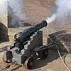
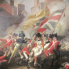
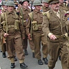
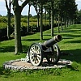
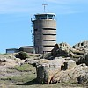
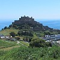

|  |  |
 |  |
 |
|
Jèrriais |
Angliais |
|
assiégi |
to besiege |
|
attatchi |
to attack |
|
bombarder |
to bombard |
|
casèrner |
to billet |
|
c'mander |
to command |
|
dêcliather la dgèrre |
to declare war |
|
des troûpeurs |
troopers |
|
d'fendre |
to defend |
|
drîlyi |
to drill |
|
en dgèrre |
at war |
|
envahi |
to invade |
|
eune arme |
gun |
|
eune arsénal |
arsenal |
|
eune attaque |
attack |
|
eune baïonnette |
bayonet |
|
eune balle |
bullet |
|
eune balle dé canon |
cannonball |
|
eune bandoliéthe |
shoulder-belt |
|
eune bombe |
bomb |
|
eune cartouchiéthe |
cartridge pouch |
|
eune hallebarde |
halberd |
|
eune minne |
mine |
|
eune saluette |
salvo |
|
eune tranchie |
trench |
|
la batâle |
battle |
|
la batt'tie |
battery |
|
la couleu |
flag |
|
la d'fense |
defence |
|
la dgèrnison |
garrison |
|
la dgèrre |
war |
|
la fliotte |
fleet |
|
la fortéresse |
fortress |
|
la fortificâtion |
fortification |
|
la garde |
guard |
|
la grénade |
grenade |
|
la Marinne |
Navy |
|
la meunition |
ammunition |
|
la Milice |
Militia |
|
la mobilisâtion |
mobilisation |
|
la pathade |
parade |
|
la poudre à canon |
gunpowder |
|
la r'venge |
revenge |
|
la sirène |
siren |
|
la soudardéthie |
soldiering |
|
la stratégie |
strategy |
|
la teunique |
tunic |
|
l'agîtant |
adjutant |
|
l'amitha |
admiral |
|
l'amitha |
flagship |
|
l'amithauté |
admiralty |
|
l'armée |
army |
|
l'armément |
armament |
|
l'armistie |
armistice |
|
l'artill'lie |
artillery |
|
l'artill'lie d'pid |
heavy artillery |
|
lé bataillon |
batallion |
|
lé bombardement |
bombardment |
|
lé canon |
cannon |
|
lé cap'tainne |
captain |
|
lé châté |
castle |
|
lé combattant |
combatant |
|
lé commandant |
commanding officer |
|
lé contigent |
contingent |
|
lé coronel |
colonel |
|
lé corpotha |
corporal |
|
lé corps dé garde |
guardhouse |
|
lé dget |
watch |
|
lé dgetteux |
lookout |
|
lé drîn |
drill |
|
lé fort |
fort |
|
lé front |
the front |
|
lé grénadgi |
grenadier |
|
lé milicien |
militiaman |
|
lé porte-enseigne |
colour-bearer |
|
lé quartchi-maître |
quartermaster |
|
lé régînment |
regiment |
|
lé sâbre |
sword |
|
lé sèrgent |
sergeant |
|
lé sèrgent-mâjeur |
sergeant-major |
|
lé soudard |
soldier |
|
lé souos-officyi |
NCO |
|
l'enn'mîn |
enemy |
|
les berrèxes |
barracks |
|
les mouontres |
military review |
|
les râtions |
rations |
|
les troupes |
troops |
|
l'învâsion |
invasion |
|
l'maréchal |
field marshal |
|
l'ordre |
order |
|
l'otchupant |
occupier |
|
l'Otchupâtion |
the Occupation |
|
l'unniforme |
uniform |
|
marchi |
to march |
|
militaithe |
military |
|
m'nichi |
to menace |
|
mobiliser |
to mobilise |
|
moustrer |
to muster |
|
otchuper |
to occupy |
|
pathader |
to parade |
|
protégi |
to protect |
|
saluer |
to salute |
|
soudarder |
to be a soldier |
|
tither |
to shoot |
|
un artilleu |
gunner |
|
un attrape-nigaud |
booby trap |
|
un boulet dé canon |
cannonball |
|
un canonnyi |
gunner |
|
un coup d'feu |
a shot |
|
un dgèrryi |
warrior |
|
un machacre |
massacre |
|
un mouton |
battering ram |
|
un navithe dé dgèrre |
warship |
|
un navithe du preunmié rang |
ship of the line |
|
un officyi |
an officer |
|
un rédgulyi |
regular soldier |
|
un simpl'ye soudard |
private |
|
un tambour-mâjeur |
drum major |

1964
 |
 |  |
 |
 |  |
 |
 |
 |
 |
 |


|

|
Viyiz étout: